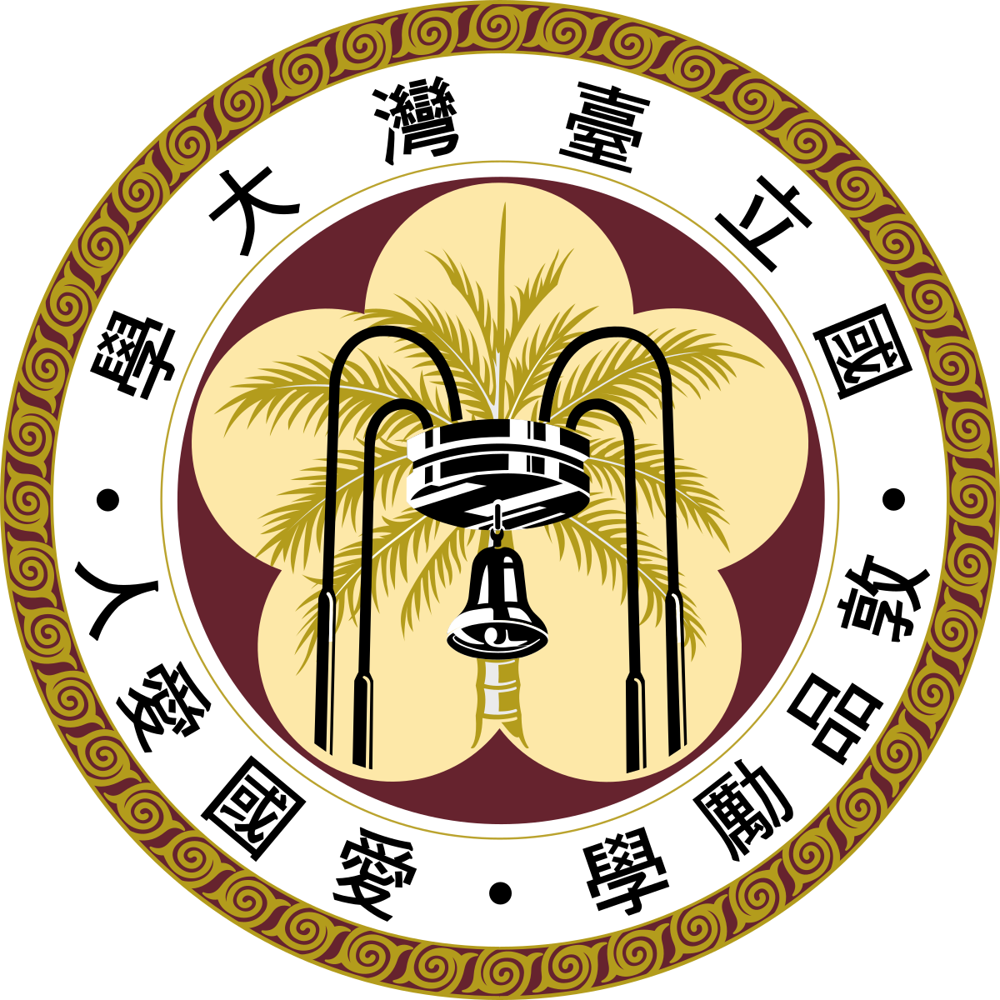
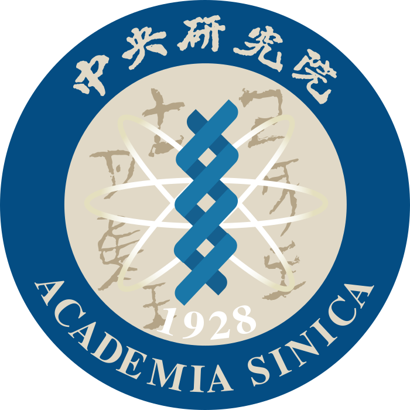
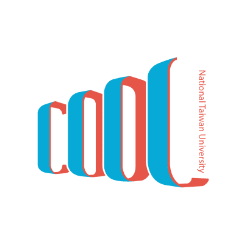
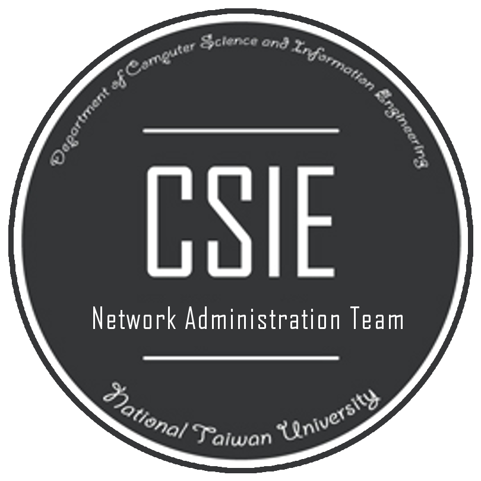
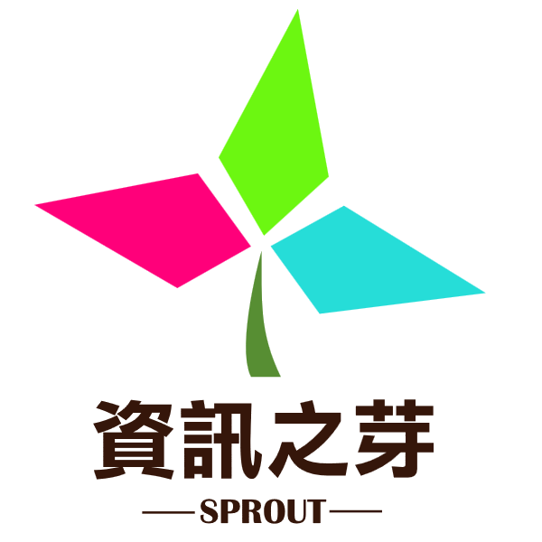
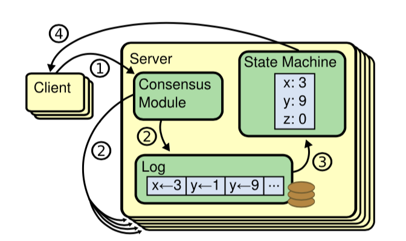
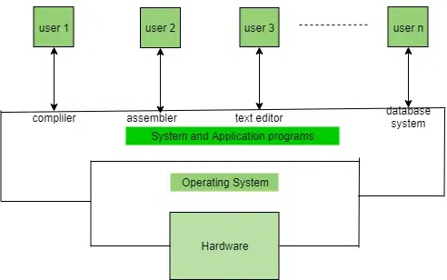
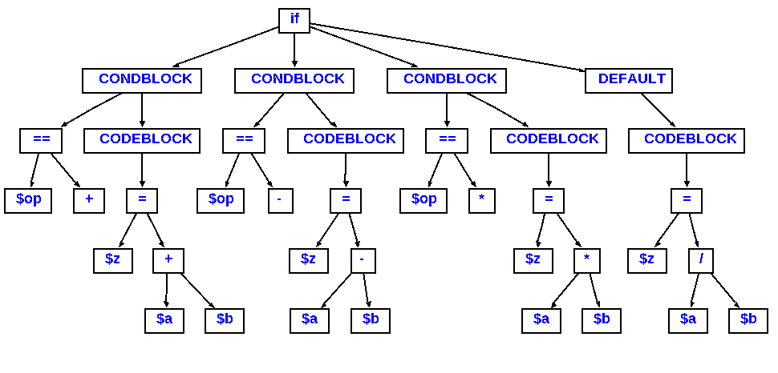

👨🏻💻 About Me
Hi! I'm Joe Tsai, a second year MSCS student at Stanford University focusing on
the theory track. Besides the theoretical side of CS, I'm also interested in systems and networking.
Before joining Stanford, I'd worked as a research assistant at Academia Sinica on intermittent systems and their
algorithms. I also have development experience as a software engineer intern at Synology and Microsoft.
📚 Education
Stanford University
Master of Science in Computer Science
September 2023 - Present ・ Stanford, CA
GPA: 4.30/4.30

National Taiwan University (NTU)
Bachelor of Science in Computer Science
September 2018 - June 2022 ・ Taipei, Taiwan
GPA: 4.28/4.30; Rank: 1/181
📋 Work Experience

Academia Sinica
Research Assistant
June 2022 - December 2022 ・ Taipei, Taiwan
- Researched algorithms for intrmittent communication and implemented an
intermittent system on bare-metal STM32 devices.
- Advised by Prof. Chih-Yu
Wang.
Synology
DevOps Engineer Intern
July 2021 - December 2021 ・ New Taipei, Taiwan
- Designed and implemented a CI/CD pipeline to streamline mobile apps development and deployment.
- Set up and maintained the infrastructure for the build service.
Microsoft
Software Engineer Intern
July 2020 - June 2021 ・ Taipei, Taiwan
- Designed and implemented a CI/CD pipeline to streamline mobile apps development and deployment.
- Set up and maintained the infrastructure for the build service.

NTU Courses Online
System/Network Administrator
February 2020 - December 2020 ・ Taipei, Taiwan
- Designed and configured the L2 network topology of the organization to support 10GiB/s traffic.
- Maintained the infrastructure hosting the service used by 30k instructors and students.

NTU CSIE Network Administration
Network Administrator Lead
January 2020 - July 2021 ・ Taipei, Taiwan
- Led a team of 6 to manage network infrastructure in the CS department.
- Setup monitoring tools to monitor network traffic.

CSIE Sprout
Instructor of C++ class
February 2019 - June 2022 ・ Taipei, Taiwan
- Taught C++ to a class of 80+ high school students each year.
- Designed project assignments for students to put programming skills to practice.
🛠️ Projects

NetCut
ARP spoofing tool written in pure C++. Socket programming and multithreading.

Byzantine Fault-tolerant RAID-like Filesystem
A distributed filesystem that can tolerate up to half of byzantine nodes. Intergrated with FUSE to
provide a transparent and seamless interface with ordinary I/O system calls.

Distributed KV Store
A shared key-value store that can be replicated and fault-tolerant with Raft consensus algorithm.
Written in Go. Project of MIT 6.824.

Pintos
Operating System written in C. Implementation of core OS features such thread scheduling, virtual
memory, user process, system calls, and filesystem. Project of Stanford CS212.
Bustub Database
Educational relational database written in C++. Implementation of extensible hashing algorithm and
concurrent query execution. Project of CMU 15/445-645.

C−− Compiler
Implemented a RISC-V compiler for C−−, which is a simplified C that supporting basic arithmetic
operations, loops, functions and arrays.